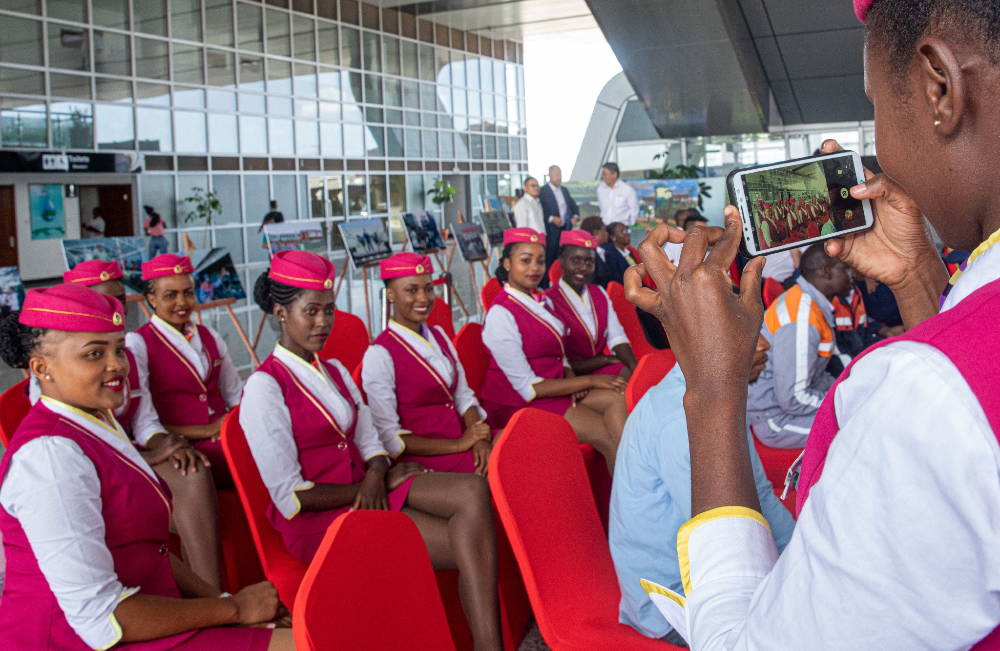
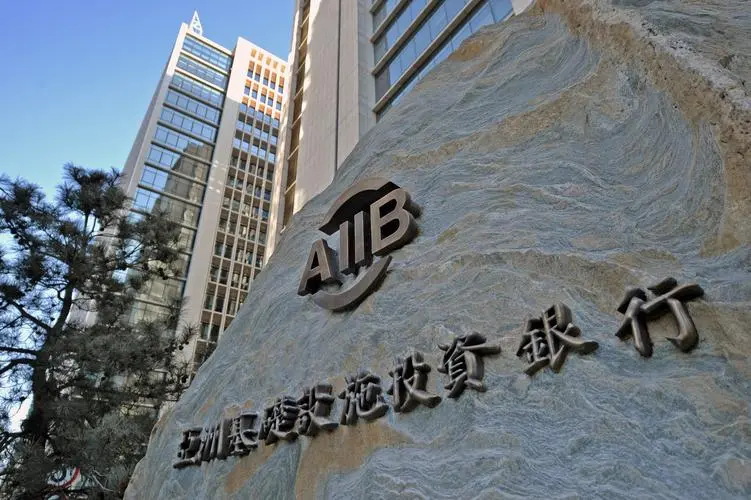

Project results

肯尼亚是中国“一带一路”倡议在非洲唯一的支点，是新丝路建设中获得中国资金援助最多的国家。
2014年5月李克强总理访问肯尼亚期间，中肯签署了关于蒙巴萨-内罗毕铁路相关合作协议，蒙内铁路是肯尼亚百年来建设的首条新铁路，是东非铁路网的咽喉，也是东非次区域互联互通重大项目，规划全长2700千米，预计总造价250亿美元。
中国企业也携手通用电气开拓EPC市场的力度不断加大，比如2015年中国机械工业集团在其承建的肯尼亚基佩托风电项目中采用60台通用1.7-103风机。
2015年6月6日，正在匈牙利进行正式访问的外交部部长王毅，在布达佩斯同匈牙利外交与对外经济部部长西亚尔托签署了《中华人民共和国政府和匈牙利政府关于共同推进丝绸之路经济带和21世纪海上丝绸之路建设的谅解备忘录》。这是中国同欧洲国家签署的第一个此类合作文件。
为保障“一带一路”通信卫星信号无障碍，国内的相关企业和政府机构已经对“一带一路”的卫星发射进行了规划和研究，未来三年到五年内，将发射多颗通信卫星，与此同时，“一带一路”途经国家的通信信号也将逐步实现全覆盖。从而在通信领域为“一带一路”铺平道路。

通过安排股权投资、项目贷款、出口信贷和提供融资咨询服务，西门子成功帮助EPC项目完成融资。以与中国机械进出口（集团）有限公司合作的孟加拉希拉甘杰电站二期225MW联合循环电厂项目为例，西门子通过协调EPC企业、业主和相关机构，帮助项目成功获得德国出口信用保险公司EulerHermes的担保，形成了中国出口信用保险公司和德国EulerHermes联合担保的结构，为项目最终获得由渣打银行牵头并包括西门子银行在内的商业银行团的贷款提供了关键的一环。该项目最终顺利落地，现已进入建设期。项目建成后将缓解孟加拉当地用电紧张。
2021年1—7月，中国对外非金融类直接投资628.1亿美元，同比增长4.2%。对外承包工程完成营业额785.1亿美元，同比增长12.3%；新签合同额1232.5亿美元，同比增长1.2%。对外劳务合作派出各类劳务人员18.4万人，7月末在外各类劳务人员60.2万人。